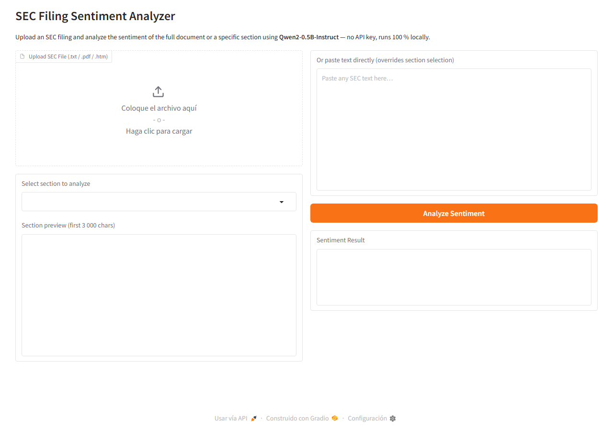

Features
📄
Multi-format upload
Accepts .txt, .pdf, and .htm SEC filings directly from EDGAR.
🔍
Section detection
Auto-detects Item 1, Item 1A, Item 7, and other named sections for targeted analysis.
🧠
Local LLM
Uses Qwen2-0.5B-Instruct via Hugging Face Transformers — no external API needed.
📊
Sentiment + reason
Returns Positive / Negative / Neutral with a one-sentence justification.
Quick Start
# 1. Clone git clone https://github.com/a01752891/sec-sentiment-app.git cd sec-sentiment-app # 2. Install dependencies pip install -r requirements.txt # 3. Run — model downloads automatically on first launch (~1 GB) python app.py